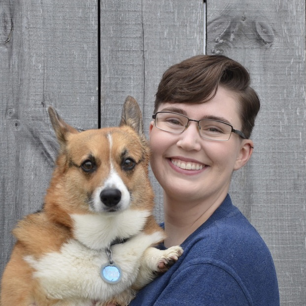
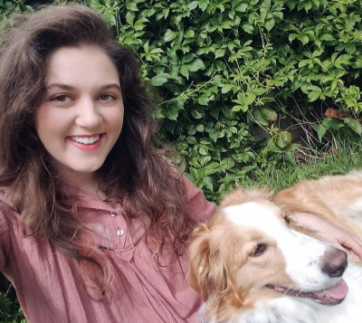
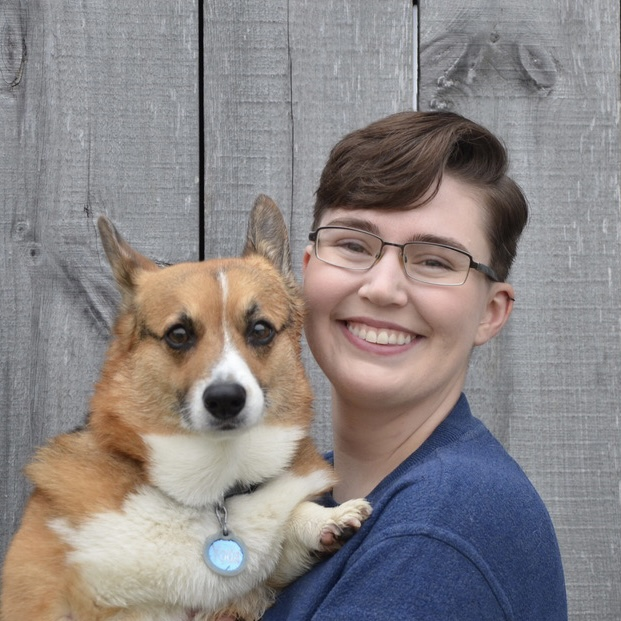
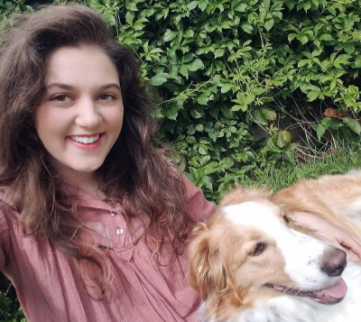

| Small | Large | Ratio | Difference |
|---|---|---|---|
| 1 | 2 | 0.50 | 1 |
| 2 | 4 | 0.50 | 2 |
| 1 | 3 | 0.33 | 2 |
| 2 | 6 | 0.33 | 4 |
Replicability in canine behavioral science
Lessons for conducting reliable research
History of canine behavioral science

Dog impulsivity


Original results


Our results


ManyDogs Project
International research consortium of scientists with shared interest in canine behavior and cognition

ManyDogs 1
Research Question
Do dogs treat human pointing as communicative cues?
Results

Site effects


Dog quantity preferences
Research Question
What numerical factors contribute to dog quantity preferences?

Results

Thank you!

  
 
Hunter
DeBoer Hannah
Fitzpatrick Anwyn
Gatesy-Davis London
Wolff ManyDogs Project
jstevens5@unl.edu dogcog.unl.edu @unl_cchil